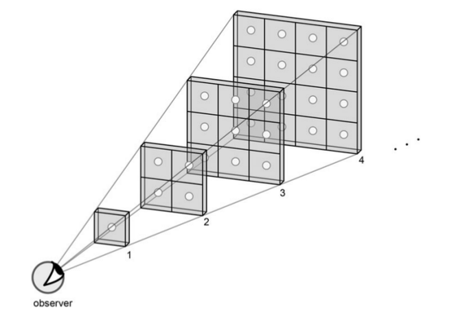

Evren Sonsuz mu?
Evreninin sonsuz olduğunu duymuş olabiliriz, bu aslında doğru değildir çünkü düşünürsek, eğer evren sonsuz olsaydı sonsuz tane yıldız olurdu. O zaman kafamızı kaldırıp gökyüzüne baktığımızda gece vakti bile gök tamamen yıldızlarla kaplı olurdu, ve gökyüzü sonsuz aydınlıkta olurdu. Ama durum böyle değil.

Webb adlı yazarın kitabından [1] alıntı yapalım. Yıldızların uzayda birörnek olarak dağılmış olduğunu düşünelim. Bir yıldızın parlaklığı onu gözleyene olan uzaklığının karesine oranla azalır, ama gözlemciye göre gökyüzündeki yıldızlar da uzaklığın aynı karesine oranla çoğalır. Bu iki etki birbirini iptal eder, o zaman üstteki resimde görülen her hücre gözyüzünün parlaklığına aynı miktarda katkı yapacaktır. Ve bu hücreler sonsuz tane olduğuna göre o zaman gece gökyüzü sonsuz aydınlıkta olmalıdır. Yakın yıldızların bazı uzakta olanların ışığını blok edeceklerini hesaba katsak bile gece gökyüzü kör edici aydınlıkta olmalı. Neden böyle değil?
Cevap: Ortaya çıktı ki bu paradoksun cevabı astronomların şimdiye kadar yaptığı en dramatik buluşta gizli. Evrenin sonlu bir yaşı var, kısıtlı bir zaman sürecinden bahsediyoruz yani. Tüm evrenin yaşı 13.8 milyar sene civarı olduğu (ve Büyük Patlama teorisine göre evren ufak bir noktadan başlayıp büyümeye başladı) için bizim gördüğümüz kısmı da sonlu / kısıtlı, sınırları olan bir kutu gibi. Gökyüzünün biraz önce tarif ettiğimiz gibi kör edici aydınlıkta olması için görülen evrenin 1 milyon kat daha fazla olması gerekirdi, ama evren o kadar büyük değil.
Kaynaklar
[1] Webb, Where is Everybody